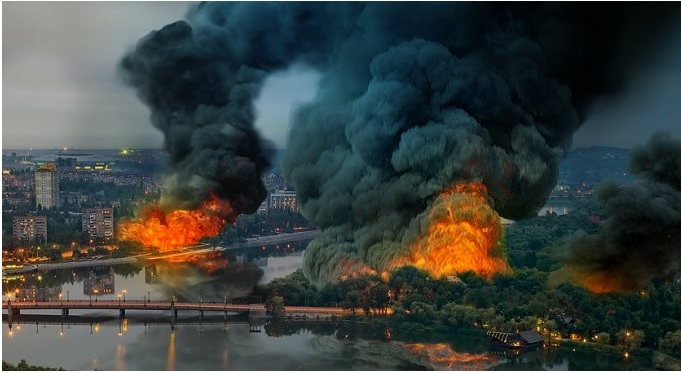
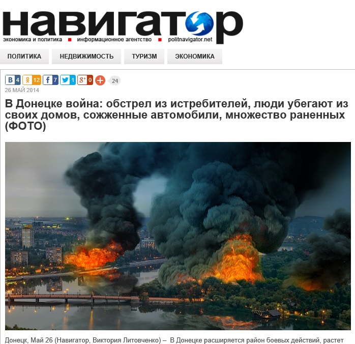
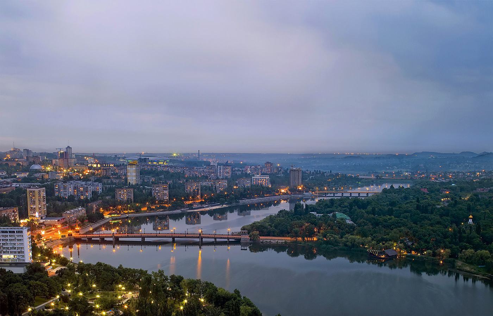

В Сети распространяется фейковое фото горящего Донецка
В социальных сетях активно распространяется фотография, на которой изображен якобы горящий украинский город Донецк 27 мая 2014 года.Эту же фотографию использовал для иллюстрации боевых действий в Донецке сайт «Навигатор».
Однако таких пожаров в Донецке не было.Эту информацию нам подтвердили жители Донецка — очевидцы событий.Постановочность фото и его излишняя «кинематографичность» сразу наталкивает на мысль, что оно было обработано в программе Photoshop.
Оригинал фото был взят на странице известной донецкой фотостудии:
После чего фотография была обработана с нанесением изображения неестественно сильно вспыхнувших пожаров.
Posted On: 2014-05-28T21:00:00



Content Date: 2014-05-28
Download Date: 2021-07-16
Document ID: L0C04FCHR